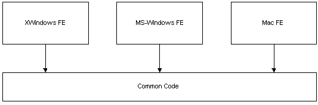
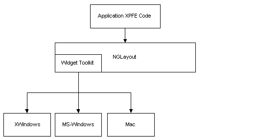
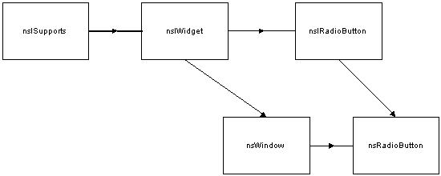

Just after the X11/Motif toolkit was developed on both IRIX and Linux and the Viewer was up and running, the aggregation of views with widgets was removed from the architecture. This left a lot of baggage in the Windows and Motif implementations. As we started the Mac port of the toolkit we decided to greatly simplify the widget hierarchy and architecture in order to make it easier to maintain the existing toolkits and port to new toolkit down the road. Aggregation was removed and we decided all "widget" interfaces would inherit directly from nsISupports.
These issues will be addressed in more depth later.

As new features were added to the product, this often meant the work had to be done separately for each platform. An advantage to this approach was that platform specific Look & Feel was guarenteed for for the set of common control that existed across platform. It may or may not have been guarenteed for customed widgets developed for each platform.
NGLayout is fully based on XPCOM and all implementation exists behind a set of public interfaces. In NGLayout all platform specific code is contained in the Widget and GFX libraries. The GFX library is responsible for graphics and rendering primitives. The Widget library encompasses all windowing and GUI components necessary for creating HTML forms and the GUI interface on given platform. This approach has many advantages:
The NGLayout widget toolkit is as follows:

The current "test" Viewer application contains platform specific code for application start up and for implementing menus. It continues to be this way today, more for historical reasons than anything else. Recently, the cross-platform Viewer, with Navigator 4.x chrome, was created almost entirely from the widget toolkit interfaces (XPFE). The only exception is application start up and this will soon be cross-platform also.
All NGLayout-based applications will be created completely from the
cross-platform set of APIs.
The third party toolkits typically:
On the surface mulitple inheritance of interfaces seems like a very useful approach. On MS-Windows all widgets are windows. If we take a look at a specific example, several issues will emerge. For instance, a nsIRadioButton inherits from nsIWidget. The interface hierarchy could be: nsIWidget->nsIRadioButton. The implementation hierarchy would then be nsWindow->nsRadiobutton.

Here are the issues:
A minor point was also made that a developer using the hierarchy
knows that he only needs to look at two interfaces for any given widget:
the nsIWidget interface and the interface for the specific widget. This
is an important point when detailed documentation is not available.
The most important, is that when the widgets live inside the layout engine they are to do as little as possible, they must dispatch all their events and then wait to be told what to do. JavaScript is a key member in the event processing chain and JS must be able reject certain events if it chooses.
For example, when a user clicks on a radiobutton, the radiobutton must first dispatch the click event and then wait to be told whether it's clicked or not clicked. The view/frame system or JavaScript determines wether the radiobutton should process the click event and whether its value should set or cleared. In many toolkits, radiobutton processing is done automatically, so in many ways the native toolkit does more than it should.
Currently, most all the widgets are developed from the native platform widgets with the exception of the Toolbar, the Toolbar Manager, the ImageButton, and the MenuButton (a button with an assosicated drop down menu).
Overtime we hope to develop many more cross-platform widgets on top of GFX that will enable developers to provide their own Look & Feel. These lightweight will not require a back-end native widget.